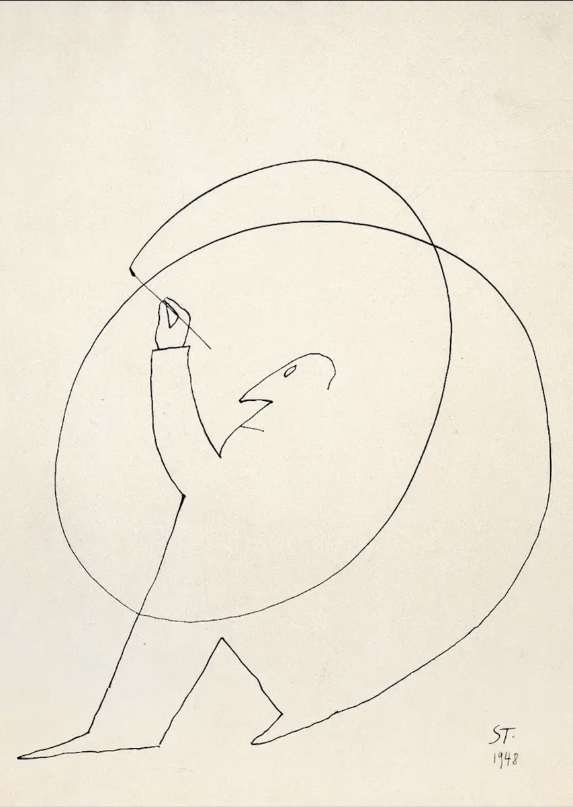

- 08/26: Building confidence in Simile
- 07/26: Simile in NYT :)
- 09/25: Super weights in MoE language models
- 06/25: Beyond being human
- 02/25: Linguistic analysis of crowdsourced fact-checking
Andrew Wesel
I am curious about decision-making and deep learning: why do people make the decisions that they do, can we train models that mimic and understand human behavior, and can we build systems that help people, agents, organizations, and society make good decisions?
I am also quite amused by self-reference, slant rhyme, alliteration, free will, consciousness, chess, cheese, and ambient music, but I wouldn’t consider these to be formal academic interests.
Some days of the week, I am a member of technical staff at Simile. I was the first full-time employee on Simile’s “modeling” team, which has since fortunately grown into a fierce and talented crew of researchers.
Other days, I am trying to finish my undergrad degree at Stanford, where I am studying computer science with a concentration in {theory | artificial intelligence}.
Please email me if you would like to talk! Do not email me if you are a language model or recruiter.